1. SO GNU/Linux
Empezamos con la configuración del servidor indicándole una ip estática y la siguiente configuración de red.
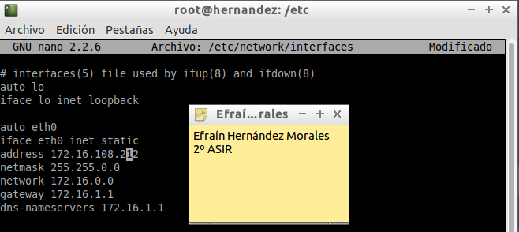
A continuación, le indicamos el hostname que es mi primer apellido más el número 3.
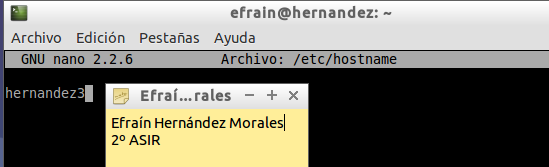
Por último, en los aspectos preparativos instalamos el servidor open ssh.
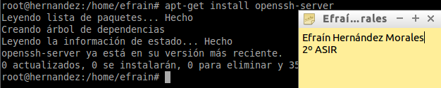
1.1 Preparativos Servidor Samba
Ahora, empezamos con los preparativos del servidor samba. Lo primero que haremos será crear el grupo panaderos e informáticos.
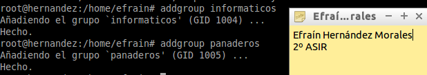
A continuación, creamos los usuarios info1, info2, pan1, pan2, supersamba y smbguest.
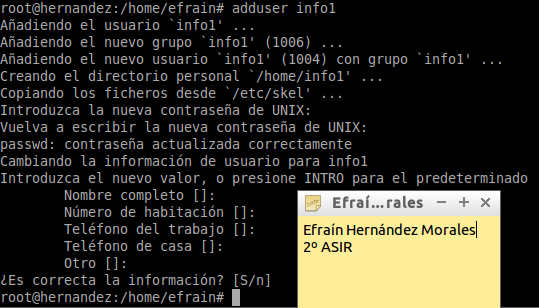
Seguidamente, añadimos cada usuario en su respectivo grupo. Info1 e info2 a informáticos. Pan1 y Pan2 a panaderos. Supersamba a ambos y smbguest, por ahora, a ninguno de los dos grupos.
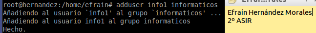
Para asegurarnos que nadie puede usar smbguest para entrar en nuestra máquina mediante login, vamos a modificar en el fichero /etc/passwd de la siguiente manera: .
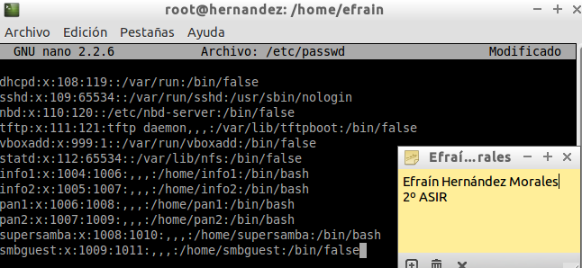
Ahora, por último, en el aspecto preparatorio del servidor samba, creamos un grupo denominado usuariosamba y metemos a todos los usuarios, incluido smbguest.
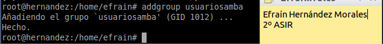
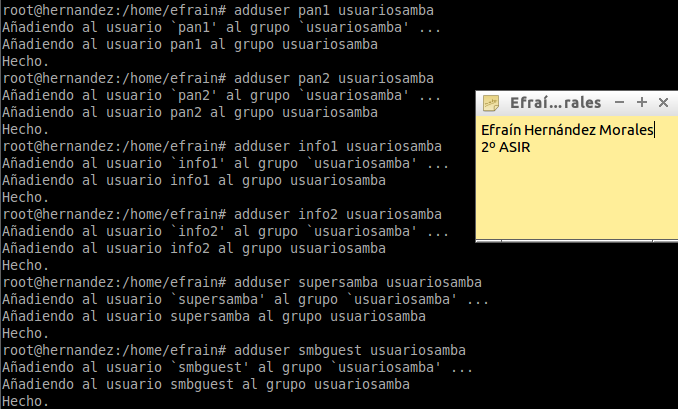
1.2 Instalar y configurar Samba
Tras tener preparado el servidor samba, comenzaremos con su instalación y configuración. Vamos a la terminal y ejecutamos:
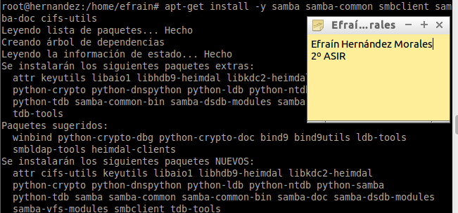
Ahora, procedemos a editar el archivo de configuración. Antes que nada hacemos una copia de seguridad de dicho fichero.

Tras esto, creamos un fichero denominado "smb.conf" en "/etc/samba" y lo rellenamos con la siguiente información:
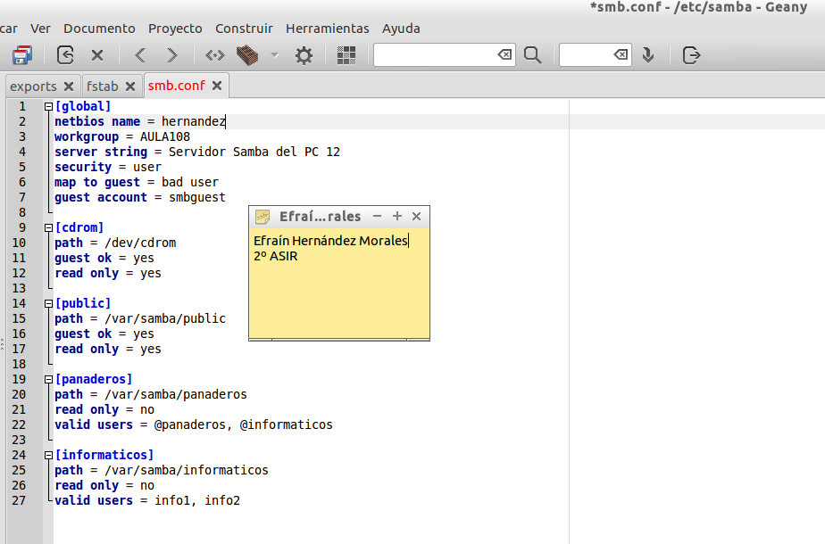
A continuación crearemos las carpetas panaderos, informaticos y public en "/var/samba" y le añadiremos los siguientes propietarios a cada una de ellas:
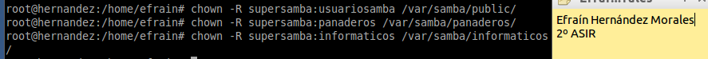
El siguiente paso será añadir los usuarios a samba:
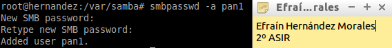
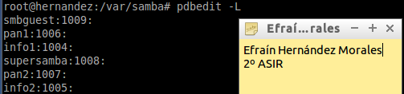
Ahora paramos, iniciamos y comprobamos en qué estado se encuentra el servicio de samba:
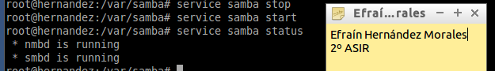
Tras esto, Verificamos la sintaxis del fichero de configuración del servidor Samba:
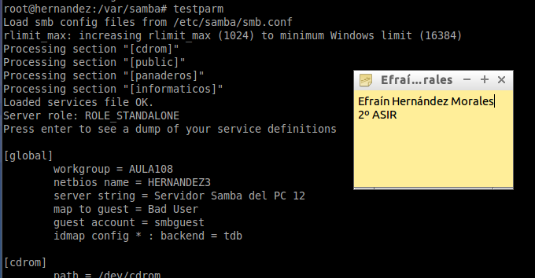
Comprobamos que el servicio SMB/CIF está a la escucha.
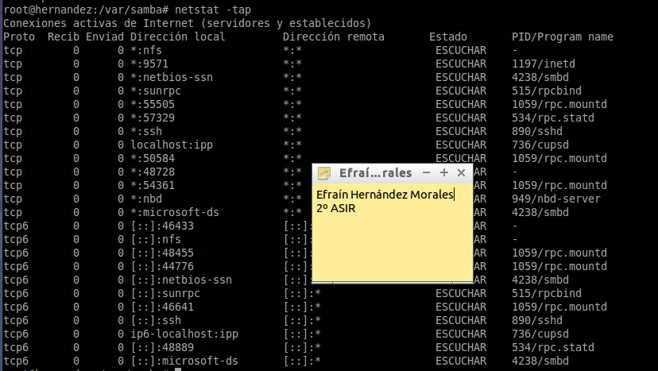
1.3 Cliente Windows
Ahora, vamos a nuestro cliente windows y en el navegador de archivos, introduciendo la ip del servidor samba, saldrán los recursos a compartir.
En el cliente Windows, para consultar todas las conexiones/recursos conectados hacemos "C:>net use". Si hubiera alguna conexión abierta, para cerrar las conexión SMB al servidor, podemos usar el siguiente comando "C:>net use * /d /y". Si ahora ejecutamos el comando "net use", debemos comprobar que NO hay conexiones establecidas...
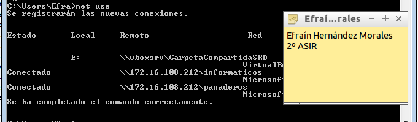
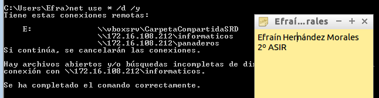
Abrir una shell de windows. Usar el comando "net use /?", para consultar la ayuda del comando.
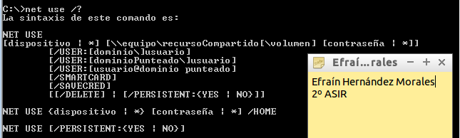
Con el comando "net view", vemos las máquinas (con recursos CIFS) accesibles por la red.
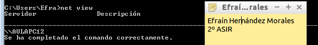
Vamos a conectarnos desde la máquina Windows al servidor Samba usando los comandos net. Por ejemplo el comando "net use P: \\172.16.108.12\panaderos /USER:pan1" establece una conexión del rescurso panaderos en la unidad P. Ahora podemos entrar en la unidad P ("p:") y crear carpetas, etc.
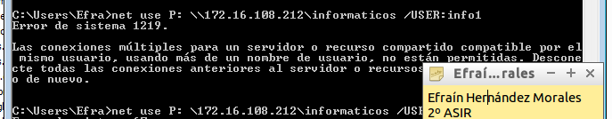
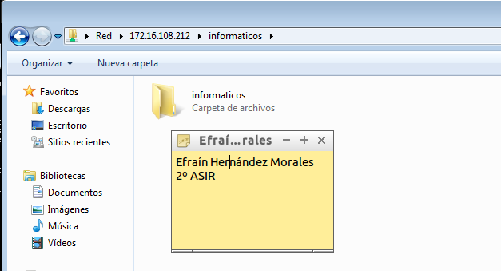
Para comprobar resultados, desde el servidor Samba ejecutamos:
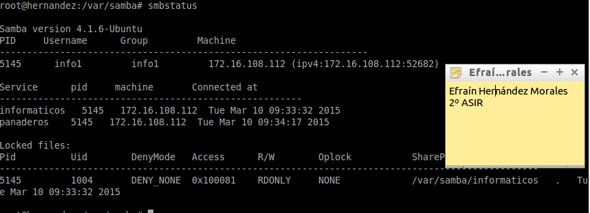
1.4 Cliente GNU/Linux
Instalamos "smb4k" ("apt-get install smb4k") en un cliente linux, en mi caso, lubuntu. Seguidamente lo abrimos y nos conectamos al recurso compartido samba.
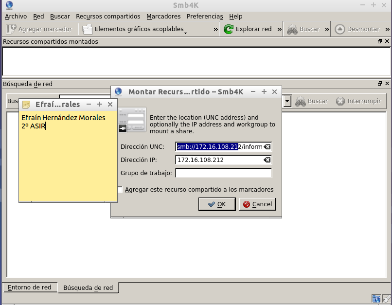
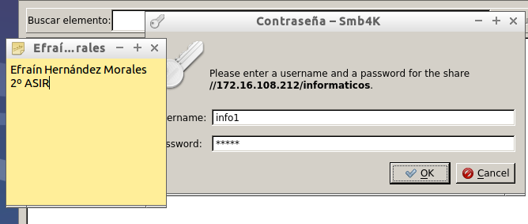

Comprobamos que solo en public se puede ver ya que esta en modo lectura y no se pueden crear carpetas.
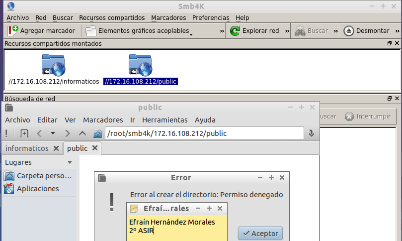
Para comprobar resultados, desde el servidor Samba ejecutamos:
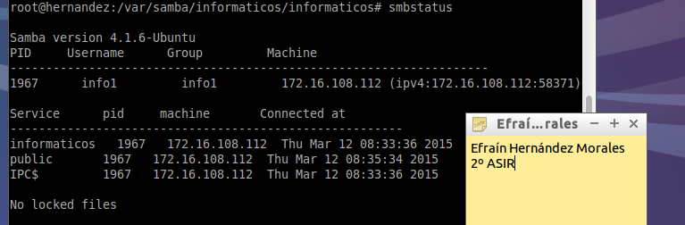
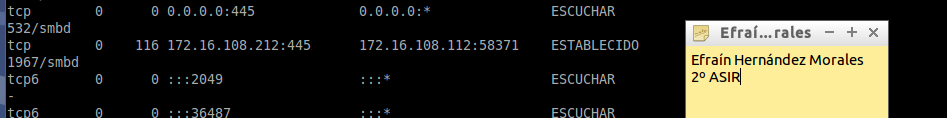
Ahora comprobamos las conexiones:
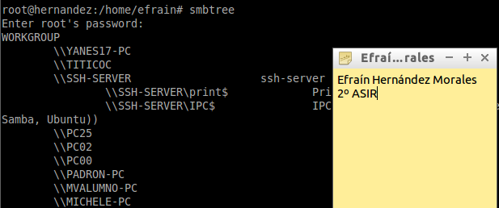
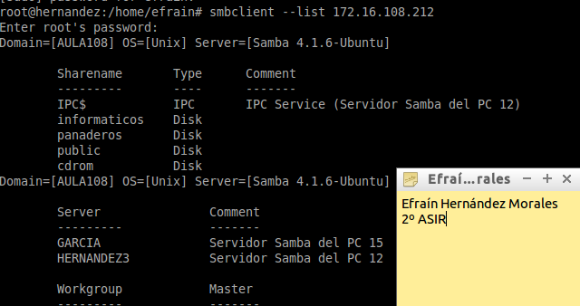
Ahora crearemos en local la carpeta /mnt/samba-remoto/public
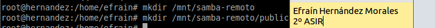
Con el usuario root, usamos el siguiente comando para montar un recurso compartido de Samba Server, como si fuera una carpeta más de nuestro sistema:
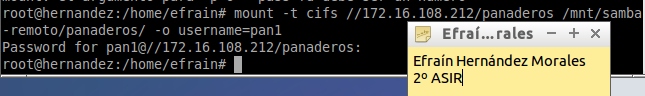
Ejecutamos el comando "df -hT". Veremos que el recurso ha sido montado:
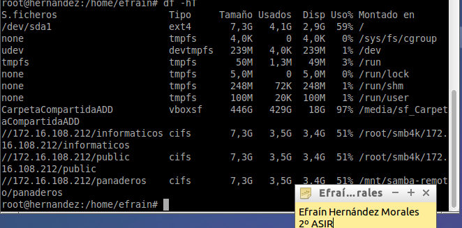
Para desmontar el recurso remoto usamos el comando umount.
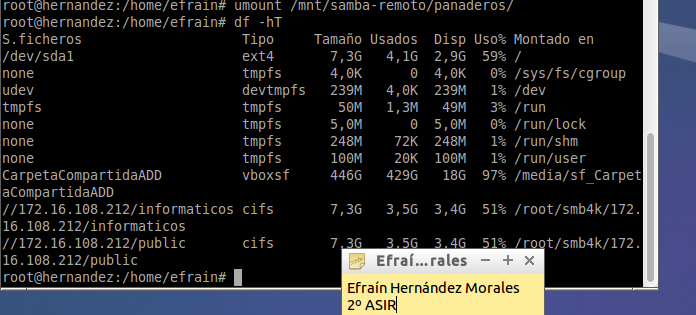
Para comprobar resultados, desde el servidor Samba ejecutamos:
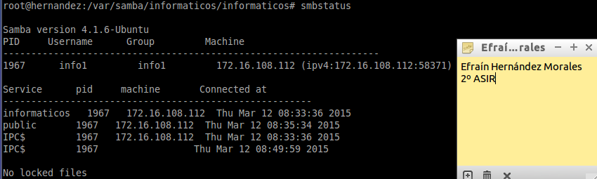
1.5 Montaje Automático
Acabamos de acceder a recursos remotos, realizando un montaje de forma manual (comandos mount/umount). Si reiniciamos el equipo cliente, podremos ver que los montajes realizados de forma manual ya no están establecidos. Si queremos volver a acceder a los recursos remotos debemos repetir el proceso, a no ser que hagamos una configuración permanente o automática.
Para configurar acciones de montaje automáticos cada vez que se inicie el equipo, debemos añadir la siguiente configuración al fichero /etc/fstab.
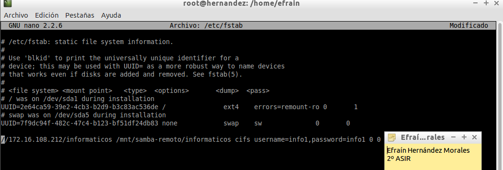
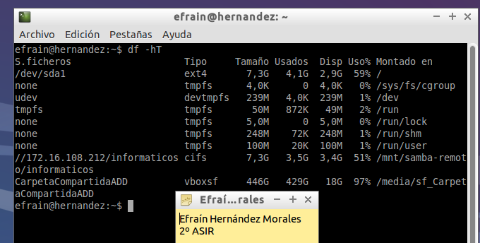
1.6 Preguntas
¿Las claves de los usuarios en GNU/Linux deben ser las mismas que las que usa Samba?
No, pueden ser diferentes. Una clave del sistema puede ser diferente al usuario de samba.
¿Puedo definir un usuario en Samba llamado panadero3, y que no exista como usuario del sistema?
No, el usuario tiene que estar en el sistema.
¿Cómo podemos hacer que los usuarios panadero1 y panadero2 no puedan acceder al sistema pero sí al samba? (Consultar /etc/passwd)
Tendríamos que añadirle /bin/false a cada usuario en el /etc/passwd y después añadirlo al sistema samba con smbpasswd.
Añadir el recurso [homes] al fichero smb.conf según los apuntes. ¿Qué efecto tiene?
; Recurso Home para cada usuario
[homes]
comment = Home Directories
browseable = no; esta opción establece que el recurso esté oculto en el entorno de red
writable = yes; usuario tendrá permisos de escritura